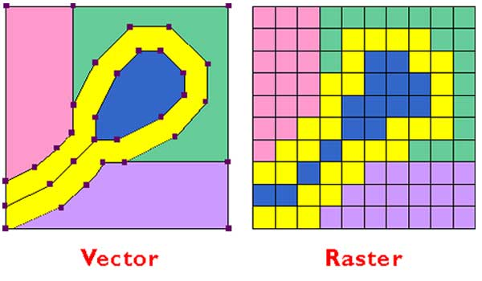

ОГЛАВЛЕНИЕ:
- Что такое растровая графика?
- - Преимущества растровой графики:
- - Недостатки растровой графики:
- Что такое векторная графика?
- - Преимущества векторной графики:
- - Недостатки векторной графики:
- Заключение
Если вы графический дизайнер, вероятно, было бесчисленное множество случаев, когда к вам приходил клиент, спрашивая, как он может увеличить изображение, так как он хочет использовать его где-то еще. Часто клиенты приходят к вам с фотографией или с логотипом компании, и в зависимости от качества и формата файла это может оказаться невозможным (из-за сильной потери качества).

Именно в этот момент вы, вероятно, приступите к многословному объяснению того, почему они просто не могут увеличить фотографию своих детей (снятую на камеру телефона).
С другой стороны, каждый был по ту сторону (то есть вы были клиентом, желающим увеличить изображение). Никому не нравится, когда дизайнер начинает использовать слишком сложные слова, потому что, не каждый разбирается в графическом дизайне. Так в какое же решение? Стоит ли просто продолжать объяснять длинный аргумент «вектор против растра» каждому из ваших клиентов? Мы считаем, что это плохое решение, и поэтому мы сделали всю тяжелую работу за вас. В этой статье мы будем объяснять различия, преимущества и недостатки векторной и растровой графики на простом языке.
Поэтому в следующий раз, вместо того, чтобы сбивать с толку ваших клиентов загадочными словами, просто покажите им эту статью и дайте ее прочитать. Поверьте нам, так проще.
Что такое растровая графика?
Растровая графика — это наиболее распространенный тип графики, который мы видим в современном мире. Большинство изображений, которые мы видим в Интернете, являются растровой графикой, как и большинство изображений, которые мы видим в различных печатных изданиях (например, в журналах или газетах).
По сути, растровая графика — это изображение, которое состоит из тысяч или миллионов цветных точек. Когда вы просматриваете изображение на экране компьютера, эти точки называются пикселями, а когда речь идет о печатных СМИ, их часто называют точками. Важно понимать, что это, по сути, одно и то же, так что не запутайтесь, если ваш дизайнер использует их взаимозаменяемо.
Каждая из этих тысяч цветных точек объединяется, чтобы создать растровое изображение. Если вы когда-либо делали фотографию, вы уже знакомы с растровым изображением. Когда вы покупаете камеру с количеством мегапикселей X, это, по сути, просто ссылка на количество точек, составляющих изображение. Чем больше точек, тем выше качество изображения.
Фотографии на сегодняшний день являются наиболее распространенным типом растровой графики, используемой в современном мире.
Преимущества растровой графики.
Качество:
Качество и детализация многих современных растровых графиков чрезвычайно высоки и, как правило, они более детализированы, чем векторная графика. Поскольку большинство растровой графики состоит из большего количества точек, вы достигаете уровня детализации, который просто невозможен с векторной графикой.
Если вы когда-нибудь задумывались, что на самом деле означают мегапиксели, это примерно миллион пикселей (или точек). Таким образом, если у вас 20-мегапиксельная камера, изображение, которое вы в итоге получите, будет составлять около 20 миллионов точек. Как вы можете себе представить, это будет исключительно высокое качество.
Точно так же, если вы когда-либо слышали, чтобы ваш графический дизайнер использовал термин DPI (Dots Per Inch), это, по сути, та же концепция. Это относится к тому, сколько «цветных точек» присутствует в одном квадратном дюйме изображения. Поэтому, если ваше изображение имеет разрешение 300 точек на дюйм, в одном квадратном дюйме изображения будет 300 точек.
Точность редактирования:

Растровая графика также предлагает больше контроля, чем векторная графика в процессе редактирования. Причина этого заключается в том, что каждая из этих миллионов точек может быть отредактирован одна за другой. Представьте, что если вы измените хотя бы одну из этих 20 миллионов точек, вы вряд ли заметите разницу. Даже если вы измените значение цвета в тысяче точек, изображение будет выглядеть практически одинаково.
Именно по этой причине растровая графика (т.е. фотографии) используется для любого изображения, которое требует редактирования.
Недостатки растровой графики:
Огромные файлы:
Поскольку растровый файл должен хранить индивидуальную информацию о цвете для каждой из этих миллионов точек, размер файла может быть довольно большим. Например, если у вас есть 20-мегапиксельное изображение, снятое на DSLR, файл изображения должен будет хранить 20 миллионов фрагментов информации о цвете (если он не сжат в JPEG или какой-либо подобным форматом).
По этой причине большинство изображений сжимаются и сохраняются в определенных форматах (.JPG, .PNG и т. д.). Все эти форматы изображений являются растровой графикой, но для группировки информации о цвете используется специальный алгоритм (не думайте об этом).
Проблемы с масштабом:
Увеличение является одной из наиболее распространенных проблем с растровой графикой, так как при увеличении они теряют качество и становятся «пиксельными». Причина этого проста: растровые изображения состоят из определенного количества точек, и, когда вы увеличиваете изображение, эти точки отодвигаются друг от друга.
Когда это происходит, промежутки остаются между пикселями, и вместо того, чтобы оставить эти пустые промежутки, компьютер будет предполагать, какие цветные пиксели следует использовать для заполнения промежутков. К сожалению, компьютер часто ошибается, и это приводит к зернистому пикселизированному изображению.
Чем больше точек / пикселей, тем больше можно увеличить изображение. Но каждое изображение может быть увеличено только на определенный процент.
Что такое векторная графика?

Векторная графика работает совершенно иначе, чем растровая графика, и поэтому у нее есть целый ряд преимуществ (хотя, и есть и недостатки).
Вместо того, чтобы состоять из конечного числа пикселей / точек, векторная графика использует различные линии, формы и кривые для создания изображения. Например, растровое изображение 200 на 200 пикселей будет содержать в общей сложности 40000 пикселей, которые составляют изображение. Векторная графика одинакового размера будет состоять всего из четырех точек (по одной в каждом углу). Затем графический редактор будет знать, как соединить эти точки, независимо от того, насколько велико изображение. Файл также хранит информацию о цвете этих точек. Когда изображение масштабируется, программа знает, чем заполнить все пробелы, и качество не будет потеряно. Программа не должна угадывать, как в случае с растровой графикой.
Преимущества векторной графики:
Маленький размер файлов:
Одним из наиболее заметных отличий между растровой и векторной графикой является размер файла. Векторная графика, как правило, будет намного меньше по размеру, чем растровая графика, из-за того, что хранит меньше информации.
100% масштабируемость:
Лучшая вещь в векторной графике (и причина, по которой она используются в большинстве случаев) — это то, что легкая масштабируемость. Это означает, что вы можете сделать векторную графику настолько маленькой или большой, насколько захотите, и она никогда не потеряет качества.
Растровое изображение должно угадывать недостающие цвета, чтобы заполнить пробелы при увеличении, тогда как с векторной графикой компьютер уже получил эту информацию. Он знает, чтобы заполнить любые промежутки между определенными точками определенного цвета.
Именно по этой причине логотипы часто хранятся в векторном формате, поскольку их можно затем масштабировать до любого размера, чтобы вывести на любые цифровые или печатные носители (например, рекламные щиты или плакаты) без потери качества.
Легкость редактирования:
Если вы графический дизайнер, вы, вероятно, создавали красивый дизайн в Photoshop, состоящий из множества слоев. Возможно, вы разработали веб-сайт и на одном слое была строка меню, а на другом — ваш контент, а на другом слое — нижний колонтитул. Однако, как только вы сохранили это как растровый файл (например, JPG или PNG), вы заметили, что изображение было «сплющено» (т.е. все слои были объединены в один).
После того, как изображение было сделано растровым, невозможно вернуть эти слои, и это часто может затруднить редактирование изображения в дальнейшем.
При сохранении векторного изображения слияния не происходит. Все слои и исходные формы все еще будут существовать, поэтому, когда вы откроете свое изображение в Adobe Illustrator через шесть месяцев после его создания, вы сможете изменять свой дизайн.
Недостатки векторной графики:
Ограничения на эффекты:
Когда вы редактируете растровое изображение в Photoshop (или аналогичном приложении для редактирования фотографий), существуют сотни возможностей. Есть эффекты, тени, градиенты и т.д .; Все это возможно, потому что изображение создано из миллионов крошечных точек.
С другой стороны, векторная графика просто хранит информацию о точках и цветах, содержащихся в них, поэтому ни один из этих эффектов невозможен. Векторная графика не может иметь тени, градиенты и ряд других интересных эффектов.
Ограниченный уровень детализации:
В отличие от растровых изображений, в которых миллионы точек приводят к высокодетализированному изображению, векторная графика не может хранить такую точную информацию о цвете. Из-за этого векторная графика совершенно не подходит для сложных изображений и всего, что требует высокого уровня детализации.
Например, вы никогда не сможете сохранить фотографию как векторное изображение и не сможете добавить детальный эффект градиента или размытия к векторному изображению. Вы можете создавать очень простые цветовые градиенты , но на этом все. Для чего-то более сложного вы будете вынуждены использовать растровые изображения.
Заключение
Как правило, растровую графику следует использовать, когда требуется, чтобы изображение имело высокий уровень детализации (например, фотография), и не было необходимости в большом увеличении изображения.
С другой стороны, векторные изображения следует использовать для графики, которая требует очень мало деталей (например, логотипов), которые, возможно, потребуется увеличить в ближайшем будущем. Большинство логотипов сохраняются в виде векторной графики, поскольку их часто необходимо увеличить позднее.
Если вы планируете создать векторное изображение, дизайн фактических изображений должен быть максимально упрощенным.